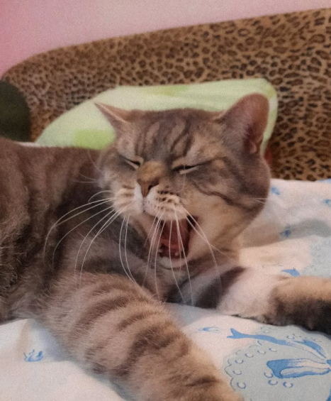

Мені вже 9 років — поважний вік для справжнього кота з характером.
Я народився в Одесі, на колоритній Молдаванці.
Мій день народження — 23 квітня 2016 року.
Моя порода — скотіш страйт (Scottish Straight).
Коріння в мене шотландське, але серце — одеське.
Я герой без плаща. Я пережив важку хворобу, коли було по-справжньому складно,
але я вистояв та переміг.
Тепер я живу, муркочу й щодня доводжу: справжня сила — це витримка та любов.
Мяу
Якщо бачите цей надпис - Гарного тобі дня!
